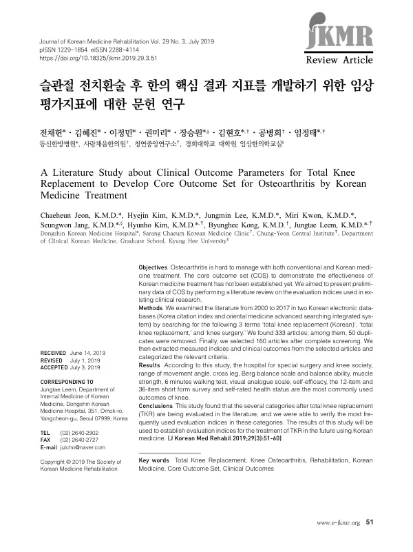

A Literature Study about Clinical Outcome Parameters for Total Knee Replacement to Develop Core Outcome Set for Osteoarthritis by Korean Medicine Treatment
Jeon C, Kim H, Lee J, Kwon M, Jang S, Kim H, Kong B, Leem J
Journal of Korean Medicine Rehabilitation 29(3):51-60

첫 장 · 오픈액세스First page · open access
논문 소개Summary
퇴행성 슬관절염이 보존적 치료로 감당되지 않을 때 마지막에 놓이는 것이 슬관절 전치환술입니다. 2017년 무릎 관절증 수술은 63,389명 66,588건으로 다빈도 수술 5위였습니다. 수술 뒤 재활을 위해 한의 의료기관을 찾는 환자도 많아, 첫 수술이나 재수술 뒤 5개월 이상 치료를 이어 간 환자에서 한의 의료기관 이용이 평균 15.31회로 의과 의료기관의 14.03회보다 많았습니다. 그런데 그 치료가 무엇을 얼마나 바꾸었는지 잴 지표는 표준화되어 있지 않았습니다.
핵심 결과지표를 만들려면 현장에서 실제로 무엇을 재고 있는지부터 세어야 합니다. 이 연구는 COMET 핸드북이 제시한 개발 절차의 첫 단계인 문헌 검색을 수행했습니다. 한국학술지인용색인과 전통의학정보포털에서 383편을 모았고, 중복 50편을 뺀 333편에서 원문을 구할 수 없는 11편, 수술과 무관한 69편, 관련은 있으나 슬관절을 잰 지표가 하나도 없는 93편을 제외해 2000년부터 2017년까지의 160편을 남겼습니다.
추출한 지표는 기능, 통증, 감정, 삶의 질, 투약, 부작용의 여섯 갈래로 나누었습니다. 기능이 328건으로 압도적이었고 그 안에서 관절 가동범위가 141건, 전반적 기능이 121건이었습니다. 가동범위에서는 움직임 각도가 91건으로 64.5퍼센트였고, 전반적 기능에서는 HSS와 KS 척도가 각각 36건으로 가장 많았습니다. 통증은 66건 가운데 VAS 31건, NRS 20건이었고 감정은 24건 가운데 자기 효능감이 7건이었습니다.
가장 눈에 띄는 것은 삶의 질입니다. 160편 가운데 삶의 질을 잰 연구는 단 3편이었고 SF-12, SF-36, 자가 건강상태 평가가 각각 한 번씩 쓰였습니다. 수술이 통증과 기능을 얼마나 되돌렸는지는 촘촘히 세면서 그 사람의 삶이 어떻게 되었는지는 거의 묻지 않은 셈입니다. 한의치료가 잡으려는 자리가 바로 여기이므로 이 빈자리는 새 결과지표에서 채워야 할 곳입니다.
이 연구는 예비 자료입니다. 국외 선행연구는 설문만으로 혹은 문헌고찰만으로 결과지표를 정했고 국내 임상 현실과도 달랐습니다. 검색한 데이터베이스가 두 곳뿐이었고 한의학에 특화된 도구는 거의 찾지 못했습니다. 델파이 합의를 거쳐야 최종 목록이 나옵니다. 다만 여기 정리한 지표 대부분은 한방병원에서 충분히 잴 수 있고 설문지 형태의 도구는 한의원에서도 쓸 수 있습니다.
Total knee replacement is what remains when conservative care can no longer manage degenerative knee osteoarthritis. In 2017, 63,389 people in Korea underwent surgery for knee arthropathy across 66,588 operations, making it the fifth most frequent surgical condition. Many turn to Korean medicine institutions for rehabilitation afterwards: among those continuing treatment beyond five months after a first or revision operation, visits to Korean medicine institutions averaged 15.31 against 14.03 to conventional ones. Yet no standardised set of measures existed for what that treatment actually changes.
Building a core outcome set begins with counting what the field already measures. Following the first step of the COMET handbook procedure, this study searched the Korea Citation Index and the Oriental Medicine Advanced Searching Integrated System and retrieved 383 records. Removing 50 duplicates left 333; excluding 11 without retrievable full text, 69 unrelated to the surgery, and 93 related but reporting no knee measure at all left 160 articles published between 2000 and 2017.
The extracted measures were sorted into six domains: function, pain, emotion, quality of life, medication, and adverse events. Function dominated with 328 entries, of which range of movement accounted for 141 and overall function for 121. Within range of movement, movement angle appeared 91 times, 64.5 percent of that domain; overall function was led by the Hospital for Special Surgery and Knee Society scales at 36 each. Pain, with 66 entries, ran on the visual analogue scale (31) and the numeric rating scale (20); emotion, with 24, was led by self-efficacy at 7.
The striking finding is quality of life. Only three of the 160 studies measured it at all, using the SF-12, the SF-36, and a self-rated health status once each. The literature counts in fine detail how much pain and function surgery restores, and almost never asks what became of the patient's life. That is precisely the territory Korean medicine treatment aims at, so this gap marks where a new outcome set has to fill in.
This is preliminary work. Overseas precedents defined outcome domains either by survey alone or by review alone, and were built on clinical realities different from Korea's. Only two databases were searched, and instruments specific to Korean medicine were hard to find; a Delphi consensus is the necessary next step before any final list. That said, most measures catalogued here are within reach of a Korean medicine hospital, and the questionnaire-based ones can be used in primary clinics as well.
인용Cite
Jeon C, Kim H, Lee J, Kwon M, Jang S, Kim H, Kong B, Leem J. A Literature Study about Clinical Outcome Parameters for Total Knee Replacement to Develop Core Outcome Set for Osteoarthritis by Korean Medicine Treatment. Journal of Korean Medicine Rehabilitation. 2019;29(3):51-60. doi:10.18325/jkmr.2019.29.3.51